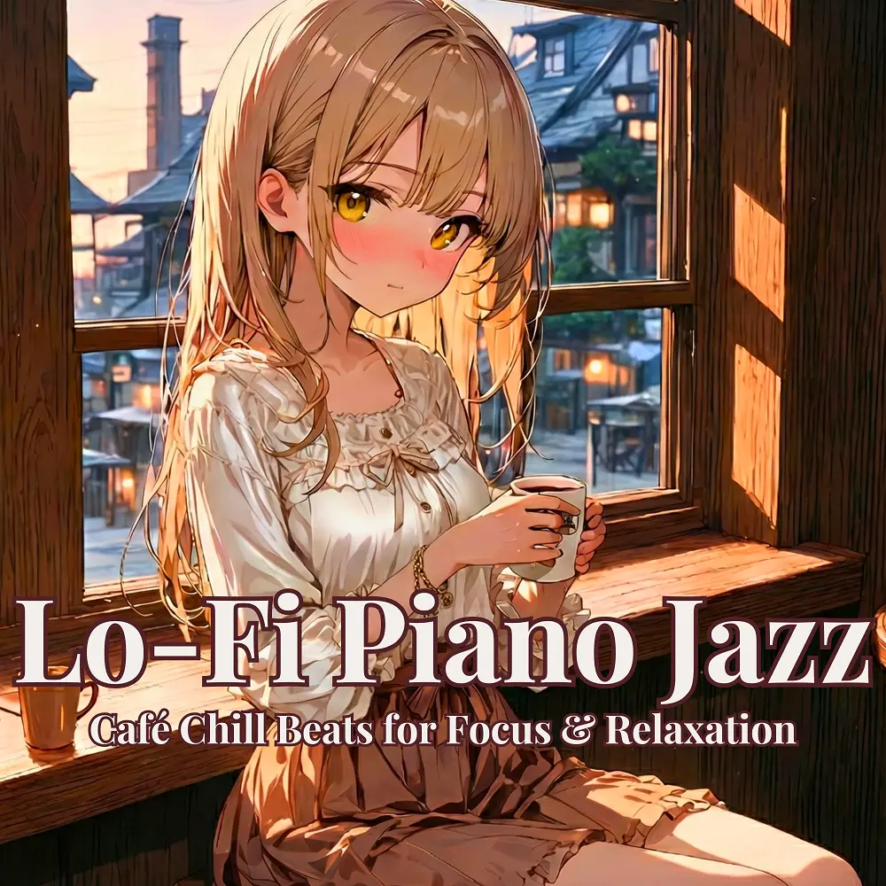

Lo-Fi · Jazz
Lo-Fi Piano Jazz: Café Chill Beats for Focus & Relaxation
Nanashino-chan
Explore Lo-Fi Piano Jazz: Café Chill Beats for Focus & Relaxation by Nanashino-chan: 27 instrumental tracks spanning Lo-Fi / Jazz. Start with Morning Brew / Cinnamon Smile, preview the collection and find your favorites on streaming services.
2025-07-18 · Released · 27 tracks · Instrumental
Preview the album
The jacket stays here until you choose a track. Playback uses YouTube.
YOUTUBE PREVIEW
Choose a track to listen
The jacket stays here until you choose a track. Playback uses YouTube.
If playback is unavailable, open the album or track on the streaming service.
Find this album on streaming services
Links marked “search” open search results. Select the album or track on the service.
Track list 27
- 01Morning Brew
- 02Cinnamon Smile
- 03Soft Drizzle
- 04Jazz & Cream
- 05Gentle Roast
- 06Window Light
- 07Biscuit Waltz
- 08Sunday Sketch
- 09Vanilla Mood
- 10Cozy Windowseat
- 11Mellow Whispers
- 12Sugar & Silence
- 13Afternoon Steam
- 14Hazelnut Vibes
- 15Lo-Fi Espresso
- 16Caramel Flow
- 17Quiet Conversation
- 18Cocoa in the Air
- 19Jazzy Daydream
- 20Amber Sunset
- 21Evening Aroma
- 22Teatime Harmony
- 23Dusk Café
- 24Relaxing Refills
- 25Twilight Sketches
- 26Final Sip
- 27Thank You for Listening
Find a sound for your next post
Copy “Nanashino-chan + track title” and paste it into your social app’s music search. Availability depends on your region and account. Copying the name does not grant usage rights.